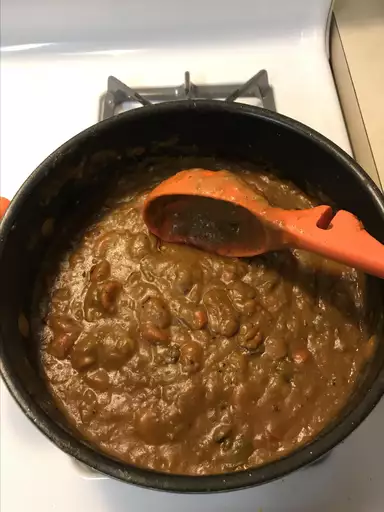

The perfect Japanese Curry! Serves 8.
Curry powder:
4 teaspoons coriander seeds
1 tablespoon fenugreek seeds
2 ½ teaspoons cumin seeds
1 ½ teaspoons green cardamom pods
¼ teaspoon fennel seeds
½ teaspoon whole cloves
⅛ teaspoon ground star anise
⅛ teaspoon cinnamon stick
5 teaspoons ground turmeric
½ teaspoon white peppercorns
½ teaspoon black peppercorns
⅛ teaspoon ground allspice
⅛ teaspoon ground nutmeg
Curry Paste:
¾ cup butter
¾ cup all-purpose flour
3 tablespoons Worcestershire sauce
3 tablespoons tomato paste
½ cup butter
2 large white onions, minced
2 pounds boneless, skinless chicken breasts, cut into 1-inch cubes
2 tablespoons minced garlic
1 teaspoon grated fresh ginger root
1 tablespoon soy sauce
1 teaspoon salt
6 cups chicken broth
2 cubes beef bouillon
8 carrots, peeled and cut into 1-inch cubes
4 potatoes, peeled and cut into 1-inch cubes, or more to taste
3 green bell peppers, cut into 1-inch cubes
2 Gala apples, peeled and grated
-
Combine coriander seeds, fenugreek seeds, cumin seeds, cardamom pods, and fennel seeds in a large
skillet
over low heat; toast until lightly golden, 1 to 2 minutes. Add cloves, star anise, and cinnamon sticks;
toast until fragrant, 1 to 2 minutes. Remove seeds from cardamom pods and return to the skillet,
discarding
pods.
-
Transfer toasted spice mixture to a spice grinder or blender. Add turmeric, white peppercorns, black
peppercorns, allspice, and nutmeg; grind into a fine curry powder.
-
Melt 3/4 cup butter in a saucepan over medium heat. Whisk in flour and cook until golden brown, 30 to 45
seconds. Stir in 4 tablespoons of the curry powder, Worcestershire sauce, and tomato paste. Remove from
heat.
-
Melt 1/2 cup butter in a large pot over low heat. Add onions; cook and stir until golden brown, 30 to 45
minutes. Increase heat to high; add 2 tablespoons curry powder, chicken, garlic, ginger, soy sauce, and
salt. Saute until chicken is browned, about 5 minutes. Add chicken broth and bouillon cubes; bring curry
to
a boil.
-
Stir carrots into the pot; cook until tender, about 5 minutes. Add potatoes; cook until tender, about 5
minutes. Stir in green bell peppers and apples. Cook until soft, about 10 minutes. Stir in curry paste
and
simmer until sauce thickens and flavors combine, about 5 minutes.